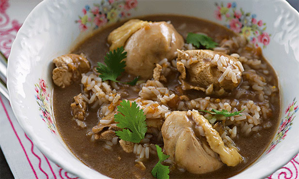

Arroz de Cabidela

One of the oldest and most know protuguese recipes
Ingredients
- 100g of onion
- 4 garlic cloves
- 4 tablespoons of olive oil
- 1 bay leaf
- 400g of tomato
- 750g of chicken
- water
- 1 tablespoons of salt
- 300g of rice
- 2 tablespoons of vinegar
Preparation
- Sauté the onion and the chopped
garlic cloves and bay leaf in a pan with oil.
- Peel the tomato, clean it of seeds,
chop into small pieces and add to the sauté.
Let it cook, stirring occasionally until the tomato is tender.
- Add the chicken cut into pieces, season with 1 tablespoon of salt and cook,
with the pan covered, for about 10 minutes over moderate heat.
- Add hot water to cover the chicken, cover it again and
simmer gently for another 20 minutes. Add a little more
boiling water so that you have about three and a half times the volume
of rice. Adjust the salt, if necessary,
and as soon as the boiling resumes, introduce the rice. Stir and cover.
- After 13 minutes, add the blood, previously mixed with the vinegar.
Mix well and boil another 1 to 2 minutes.
Remove from heat and serve immediately. Serve with salad.